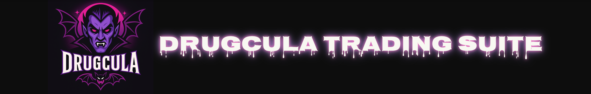

🧛 DRUGCULA TRADING SUITE

Welcome to DrugCula — the stealthiest, most distributed, and AI-assisted trading engine for meme coin domination.
🧩 Core Features
- Multi-layered wallet structure: Main → Ghost → Bots → Mirror
- 4 intelligent trade groups (A–D) with custom buy/sell logic
- Real-time mirror trading from public or known wallet leaders
- Stealth mode to hide trade patterns from bubble maps
- Withdraw & fund cascades with 1-click control
- 24/7 automated backend via VPS with Telegram alerts
🚀 How It Works
- Generate wallets and cascade SOL down from Phantom
- Lock your token (via address)
- Activate groups, start trades, set mirror leaders
- Let DrugCula operate autonomously or control it manually
📈 ROI Potential
Profit outcomes range from 1.5x to 5x+ depending on strategy, timing, and token behavior. DrugCula’s stealth spread and mirror edge allow bots to buy early and exit cleanly.
🔒 Safety
- Secrets stored locally or server-side (not in browser)
- All wallets exportable, restorable, and viewable
- Whitelist lets you protect your own wallets from being mimicked
📬 Telegram Alerts
Get instant notifications for withdrawals, errors, mirrored trades, or funding events. Configure bot token and chat ID in your config.json.
🧠Server Automation
- Run headless Node.js worker from any VPS
- Logs sent to REST endpoint and Telegram
- Log viewer UI available to monitor all actions